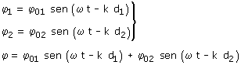
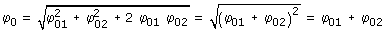

Se produce una interferencia cuando pasan por el mismo punto dos ondas análogas. La perturbación resultante es la suma de las perturbaciones de cada onda:
 |
 |
La amplitud de la perturbación resultante viene dada por:

|
ΔΦ |
Diferencia de las fases de las ondas en el punto de encuentro |
Si ΔΦ es un multiplo par de π, cos ΔΦ = 1

La amplitud de la interferencia es la suma de amplitudes de las ondas (Interferencia constructiva)
Si ΔΦ es un multiplo impar de π, cos ΔΦ = -1

La amplitud de la interferencia es la resta de amplitudes de las ondas (Interferencia destructiva)